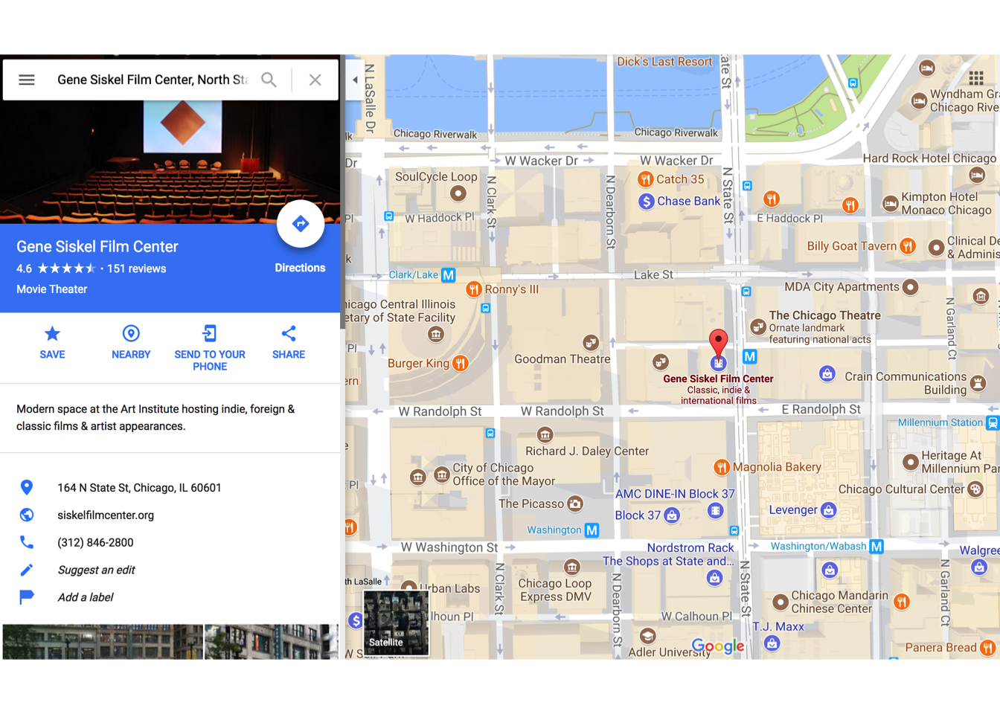
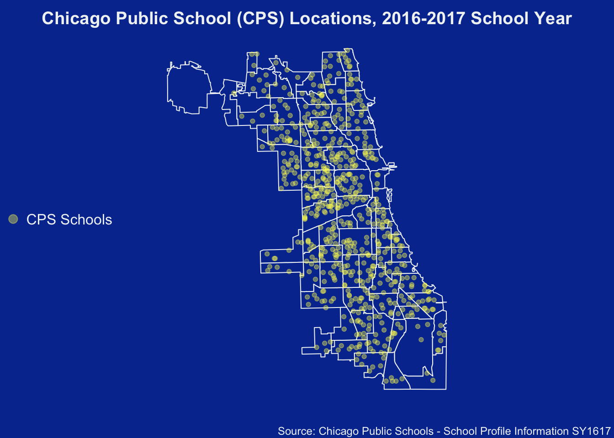
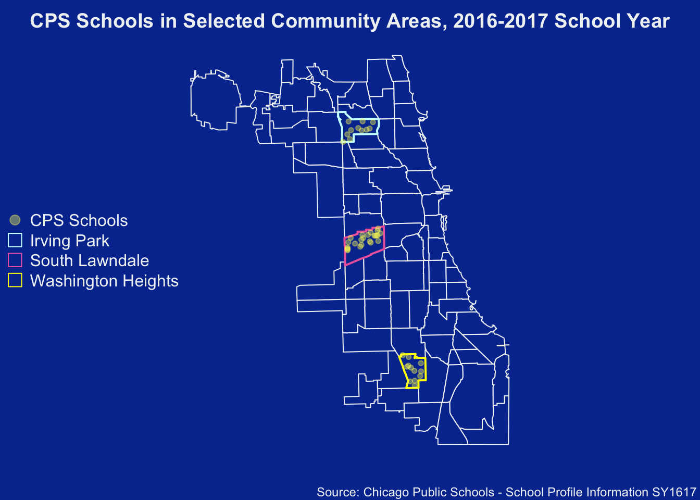

Label Points Inside Polygons
Cristian Nuno
December 25, 2017
Introduction
Working with spatial elements is what got me interested in learning R in the first place. But I must admit, it was very overwhelming at first.
What follows is a walkthrough that goes over the key spatial elements needed to understand how to conduct an introductory-level of spatial analysis in R.
- Polygons
- Points
- Identifying Points Inside Polygons
Necessary Packages
To follow the tutorial, you’ll need to install the following packages installed:
sp: classes and methods for spatial data.rgdal: bindings for the Geospatial Data Abstraction Library.splancs: spatial and space-time point pattern analysis.dplyr: data manipulation.magrittr: set of operators which make your code more readable.pander: provide a minimal and easy tool for rendering R objects into Pandoc’s markdown.
install.packages( c( "sp", "rgdal", "splancs"
, "dplyr", "magrittr", "pander"
)
)Polygons
Polygons on a map represent natural or artificial borders used to mark on space apart from another. In Chicago, a common series of polygons are the 77 Community Areas that make up the entire city.

Image Courtesy of Wiki Media Commons
{kind=link}
Importing Polygons into R
Fortunately, importing polygons into R is easy.
The data for this tutorial comes from the City of Chicago’s Open Data Portal:
City of Chicago’s open data portal is a lets you find city data, find facts about your neighborhood, lets you create maps and graphs about the city, and lets you freely download the data for your own analysis. Many of these data sets are updated at least once a day, and many of them updated several times a day.
 Image courtesy of the City of Chicago
Image courtesy of the City of Chicago
 Image courtesy of the City of Chicago
Image courtesy of the City of Chicago
 Image courtesy of the City of Chicago
Image courtesy of the City of Chicago
Boiled down, these are the general steps to importing:
Find polygon source, such as City of Chicago’s current community area (cca) boundaries
Export that source as a GeoJSON file - a java-based format that condenses the size of geographic information - by copying the link location. With the City’s data portal, go to “Export”, then hover the mouse under “GeoJSON”. Right-click and click on the phrase “Copy Link Location”.
Save the copied link as a character vector in R
Use the
rgdalpackage to call that vector and transform it into a spatial data frame.The same steps apply when importing a .CSV file into R, expect substituting
rgdal::readOGR()forread.csv().
See below for what this looks like in R.
# import necessary packages
library( sp )
library( rgdal )
# store Chicago current community area
# GeoJSON URL as a character vector
geojson_comarea_url <- "https://data.cityofchicago.org/api/geospatial/cauq-8yn6?method=export&format=GeoJSON"
# transform URL character vector into spatial dataframe
comarea606 <- readOGR( dsn = geojson_comarea_url
, layer = "OGRGeoJSON"
, stringsAsFactors = FALSE
, verbose = FALSE # to hide progress message after object is created
)Points
Points on a map represent longitudinal and latitudinal coordinates, a unique pair that specifies an address.  Image Courtesy of Google Maps
When Longitude and Latitude Are Not Given, You May Find Them by Geocoding
In the event that coordinate pairs are not given in your data set, see if they have a full_address variable that is composed of street address, city, state, and zip code. If not, see if each of those is its own variable.
If you possess either a full_address variable or all four variables pasted together compose a full address, you may go onto to geocode the coordinates. This refers to looking up an address in a geo-database and returning the x-y (longitude-latitude) coordinates.
I often use www.latlong.net if I need geocode one or two addresses. Besides that, I use the geocode function within the ggmap package.
The geocode function only asks for a full address and - by default - gives you back longitude and latitude pairs.
Chicago Public School Points
To explore points, we will be using Chicago Public Schools - School Profile Information SY1617 data from the City’s data portal.
Using the exact same steps as when we imported polygon data into R is how you will import point data as well.
# store cps school data for SY1617 URL
# as a character vector
cps.sy1617.url <- "https://data.cityofchicago.org/api/views/8i6r-et8s/rows.csv?accessType=DOWNLOAD"
# transform URL into a data frame using the base `read.csv` function
cps.sy1617 <- read.csv( file = cps.sy1617.url
, header = TRUE
, stringsAsFactors = FALSE
)Plotting Points on a Polygon
Now that you’ve acquired the two, time to plot!
Brief Introduction to Color
New to colors? Briefly, R’s color arguments - col, bg, border - can take in a variety of colors:
Personal favorite website is www.htmlcolorcodes.com for their friendly immersion into the world of color.
# clear margin space
par( mar = c( 2, 0, 2, 0 )
, bg = "#06369D" # cps blue
)
# plot the polygons
plot( comarea606
, main = "Chicago Public School (CPS) Locations, 2016-2017 School Year"
, col.main = "#F0F3F4"
, col = "#06369D" # cps blue
, border = "#F0F3F4"
)
# add the points
points( x = cps.sy1617$School_Longitude
, y = cps.sy1617$School_Latitude
, col = rgb( red = 249
, green = 245
, blue = 97
, alpha = 100 # add some transparency
, maxColorValue = 255
) # bright yellow
, pch = 20 # for more information on point type, look at ?par
)
# add legend
legend( x = "left"
, pt.cex = 2
, text.col = "#F0F3F4"
, legend = "CPS Schools"
, pch = 20
, col = rgb( red = 249
, green = 245
, blue = 97
, alpha = 100 # add some transparency
, maxColorValue = 255
) # bright yellow
, bty = "n"
)
# add data source
mtext( side = 1
, adj = 0.99
, line = 1
, cex = 0.75
, text = "Source: Chicago Public Schools - School Profile Information SY1617"
, col = "#F0F3F4"
)
Can you identify which points (Chicago Public Schools) reside in which particular polygon (current community area)?
Identifying Points Inside Polygons
After reading the R Filter Coordinates post on Stack Overflow, I figured out a way to identify points inside polygons. Therefore, you can add the identified polygon as a column for each row, which would allow for the possibility of filtering points based on which polygons they reside in.
Import ‘splancs’ package
Import the splancs package to conduct our spatial point pattern analysis
# import necessary packages
suppressPackageStartupMessages( library( splancs ) )Create GetPolygonCoordinates() Function
Create GetPolygonCoordinates() function to access coordinate values within multiple polygons inside a spatial data frame.
GetPolygonCoordinates <- function( a.spatial.df ) {
# start counter
i <- 1
# create empty list
empty.list <- list()
# start while loop
while( nrow( a.spatial.df ) >= i ) {
# fill the empty list with one set of coordinates
empty.list[[i]] <- a.spatial.df@polygons[[i]]@Polygons[[1]]@coords
# add 1 to the counter
i <- i + 1
} # end of while loop
# return the empty.list to the Global Environment
return( empty.list )
} # end of GetPolygonCoordinates functionUse GetPolygonCoordinates() Function
Use the GetPolygonCoordinates() function to retrieve the coordinate values within the multiple polygons inside the comarea606 spatial data frame (which represents the current community areas within the City).
# use the `GetPolygonCoordinates` function
# to retrieve all coordinate values that reside
# within each polygon
comarea606.polygons <- GetPolygonCoordinates( comarea606 ) # list of 77 matricesUse Polygon Names to Label 77 Matrices
Assign the list of names within the spatial data frame to the newly created list of 77 matrices, which contain the coordinate values within the multiple polygons inside the comarea606 spatial data frame (which represents the current community areas within the City).
Since GetPolygonCoordinates() creates each matrix in order of each polygon’s appearance in comarea606, you can safely use the column comarea606$community to label each matrix its corresponding community area name.
# `comarea606.polygons` is a list with 77 matrices
# to label each matrix
# use the `names` functions and assign its corresponding community area name
# by calling the "community" variable
# inside the `comarea606` spatial polygon data frame
names( comarea606.polygons ) <- comarea606$communityCreate LabelPointsWithinPolygons() Function
Now to put it all together with a function that contains three arguments:
Long: A vector of logitudinal pointsLat: A vector of latitudinal pointsa.list.of.coordinates: A list of coordinates within every polygon from a spatial data frame
and returns a character vector of the the name of the polygon individual points reside in.
Notes
Points that may not exist within any of the polygons
The function has been updated to account for data frames which contain some latitude and longitude coordinates that not exist in any polygons. The CPS data frame was a lucky pick in the sense that every polygon contained at least one coordinate pair.
Selecting points inside a polygon
The splancs::inpip() function returns a vector of indices of the points in pts which are located within the polygon in poly. The logical test here is to see which rows within the df.lon.lat data frame are within the vector of indices being returned by splancs::inpip().
Assuming a complete list of non-NA coordinate pairs
At the moment, the following function assumes the data frame contains longitude and latitude pairs which do not contain a single NA value.
LabelPointsWithinPolygons <- function( Long
, Lat
, a.list.of.coordinates ) {
# 1. Ensure necessary packages are imported
require( splancs )
# 2. Create 'polygon.label' vector
# and assign it a value of NA. This variable will be used to
# identify which coordinate pairs exist within which particular
# polygons from a.spatial.df
polygon.label <- ifelse( test = identical( x = length( Long )
, y = length( Lat )
)
, yes = rep( x = NA
, times = length( Long )
)
, no = stop( paste( "Length of Long is", length( Long)
, "but the length of Lat is", length( Lat )
, ". Ensure the two are of equivalent lengths prior to executing the LabelPointsWithinPolygons() function."
)
)
)
# 3. Start your counter
i <- 1
# 4. Start your while loop
while( length( a.list.of.coordinates ) >= i ) {
# 5. Create a coordinate pair data frame
# and ensure Long and Lat are both cast as numeric
df.lon.lat <- data.frame( Long = as.numeric( Long )
, Lat = as.numeric( Lat )
, stringsAsFactors = FALSE
)
# 6. Rename the columns within df.lon.lat
# rename "Long" as "x"
# and rename "Lat" as "y"
colnames( df.lon.lat ) <- c("x", "y")
# 7. Test which coordinate pairs from df.lon.lat
# reside within the ith polygon
# inside of a.list.of.coordinates
df.lon.lat$in.polygon <-
1:nrow( df.lon.lat) %in%
inpip(
pts = df.lon.lat
, poly = a.list.of.coordinates[[i]]
)
# 8. Logical test: Does at least one coordinate pairs reside within
# this particular polygon (i.e. a.list.of.coordinates[[i]])?
if( any( df.lon.lat$in.polygon ) == TRUE ) {
# since at least one coordinate pair within df.lon.lat
# resides within this particular polygon,
# filter df.lon.lat to only include these pairs which
# contain a TRUE value in their $in.polygon column.
df.lon.lat <-
df.lon.lat[ which( df.lon.lat$in.polygon == TRUE ), ]
# 9. Two step process:
# * filter polygon.label by including only those elements
# whose Long values appear in df.lon.lat$x
# AND
# whose Lat values appear in df.lon.lat$y
#
# * for these filtered elements, replace their NA values
# with the name of the polygon within a.list.of.coordinates[[i]]
polygon.label[
which( Long %in% df.lon.lat$x &
Lat %in% df.lon.lat$y
)
] <- names( a.list.of.coordinates )[i]
# 10. Move onto the next polygon with a list.of.coordinates
i <- i + 1
} else{
# 11. since every coordinate pair within df.lon.lat
# does not reside within this particular polygon,
# add one to counter
# and move onto the the next polygon
# within a.list.of.coordinates[[i]]
i <- i + 1
} # end of else statement
} # end of while loop
# 12. return polygon.label
# to the Global Environment
return( polygon.label )
} # end of LabelPointsWithinPolygons() functionUse LabelPointsWithinPolygons() Function
Run the LabelPointsWithinPolygons() function to assign points within the data frame the names of the polygon they reside in. Peak inside to make sure it worked.
# Run the `LabelPointsWithinPolygons()` function
cps.sy1617$Community_Area <- LabelPointsWithinPolygons( Long = cps.sy1617$School_Longitude
, Lat = cps.sy1617$School_Latitude
, a.list.of.coordinates = comarea606.polygons
)
# peak inside the data frame AFTER the transformation
library( dplyr )
library( magrittr )
library( pander )
cps.sy1617 %>% # call df
select( Short_Name
, School_Longitude
, School_Latitude
, Community_Area ) %>% # select certain variables within the data frame
head() %>% # look at first six rows
pander( digit = 7
, caption = "Sample of Chicago Public Schools - School Profile Information SY1617")| Short_Name | School_Longitude | School_Latitude | Community_Area |
|---|---|---|---|
| SAYRE | -87.79872 | 41.91415 | AUSTIN |
| MCNAIR | -87.74673 | 41.89782 | AUSTIN |
| HOLDEN | -87.65379 | 41.83803 | BRIDGEPORT |
| ACERO - ZIZUMBO | -87.7305 | 41.81014 | ARCHER HEIGHTS |
| MURPHY | -87.71683 | 41.95008 | IRVING PARK |
| BATEMAN | -87.70215 | 41.95822 | IRVING PARK |
Test Accuracy of LabelPointsWithinPolygons() Function
Fortunately for us, the accuracy of the LabelPointsWithinPolygons() function can be tested thanks to the City of Chicago data portal.
Chicago Public Schools - School Locations SY1617 is a data set which hosts geographical boundary data for each CPS school for the 2016-2017 school year. Of the 15 columns it contains, one of them commarea for the current community area each particular school resides in.
Account for School Closures and School Opening
Unfortunately, schools close more frequently than anyone would like to imagine. Chicago Public Schools - School Locations SY1617 was updated on August 31, 2016. It contains 670 records for 670 schools which were presumably open at the time of the update.
On the other hand, Chicago Public Schools - School Profile Information SY1617 was updated on September 20, 2017. It contains 661 records for 661 schools which were presumably open at the time of the update.
For the accuracy of the LabelPointsWithinPolygons() function, I will exclude those 9 schools which are not present in the more recent data set. I will also check and exclude any new schools which are not present in the older data set.
# import CPS SY1617 location data
cps.sy1617.location.url <- "https://data.cityofchicago.org/api/views/75e5-35kf/rows.csv?accessType=DOWNLOAD"
# transform into a data frame using base 'read.csv()'
cps.sy1617.location <- read.csv( file = cps.sy1617.location.url
, header = TRUE
, stringsAsFactors = FALSE
)
# test which school's appear in both data sets
# by seeing which School_IDs match in the other
cps.sy1617.location$in.other.data <- ifelse( test = cps.sy1617.location$School_ID %in% cps.sy1617$School_ID
, yes = TRUE
, no = FALSE
)
# repeat for the newer data set
cps.sy1617$in.other.data <- ifelse( test = cps.sy1617$School_ID %in% cps.sy1617.location$School_ID
, yes = TRUE
, no = FALSE
)
# include those schools which contain a TRUE value in their $in.other.data column
cps.sy1617.location <- cps.sy1617.location[ which(
cps.sy1617.location$in.other.data == TRUE
), ]
# repeat for the newer data set
cps.sy1617 <- cps.sy1617[ which(
cps.sy1617$in.other.data == TRUE
), ]
# re order each data set so that records appear in ascending order by School_ID
cps.sy1617.location <- cps.sy1617.location[
order( cps.sy1617.location$School_ID )
, ]
cps.sy1617 <- cps.sy1617[ order( cps.sy1617$School_ID ) , ]
# ensure row.names are correct
row.names( cps.sy1617.location ) <- as.character( 1:nrow( cps.sy1617.location ) )
row.names( cps.sy1617 ) <- as.character( 1:nrow( cps.sy1617 ) )
# add update_date columns
cps.sy1617.location$update_date <- as.Date( x = "2016-08-31" )
cps.sy1617$update_date <- as.Date( x = "2017-09-20" )Peak Inside Both Data Sets
# display a few rows and columns from older data set
cps.sy1617.location %>% # call df
select( update_date
, Short_Name
, School_ID
, COMMAREA ) %>% # select certain columns
head() %>% # show only first six rows
pander( digits = 6
, caption = "Sample of CPS Locations SY1617 - August 31, 2016") # Prints an R object in Pandoc's markdown, allow for more digits to be shown to the user| update_date | Short_Name | School_ID | COMMAREA |
|---|---|---|---|
| 2016-08-31 | GLOBAL CITIZENSHIP | 400009 | GARFIELD RIDGE |
| 2016-08-31 | ACE TECH HS | 400010 | WASHINGTON PARK |
| 2016-08-31 | LOCKE A | 400011 | EAST GARFIELD PARK |
| 2016-08-31 | ASPIRA - EARLY COLLEGE HS | 400013 | AVONDALE |
| 2016-08-31 | ASPIRA - HAUGAN | 400017 | ALBANY PARK |
| 2016-08-31 | CATALYST - CIRCLE ROCK | 400021 | AUSTIN |
# display a few rows and columns from newer data set
cps.sy1617 %>% # call df
select( update_date
, Short_Name
, School_ID
, Community_Area ) %>% # select certain columns
head() %>% # show only first six rows
pander( digits = 6
, caption = "Sample of CPS Locations SY1617 - September 20, 2017") # Prints an R object in Pandoc's markdown, allow for more digits to be show| update_date | Short_Name | School_ID | Community_Area |
|---|---|---|---|
| 2017-09-20 | GLOBAL CITIZENSHIP | 400009 | GARFIELD RIDGE |
| 2017-09-20 | ACE TECH HS | 400010 | WASHINGTON PARK |
| 2017-09-20 | LOCKE A | 400011 | EAST GARFIELD PARK |
| 2017-09-20 | ASPIRA - EARLY COLLEGE HS | 400013 | AVONDALE |
| 2017-09-20 | ASPIRA - HAUGAN | 400017 | ALBANY PARK |
| 2017-09-20 | CATALYST - CIRCLE ROCK | 400021 | AUSTIN |
Test Unique Community Area Spelling
To test the unique current community area objects for exact equality, I’ll be using the identical() function. To my knowledge, there are no spelling mistakes in either data set. It is also important to note that both sets of current community area values are upper case.
# test alphabetized unique Community Area objects
# to ensure spelling is correct
identical( x = sort( unique( cps.sy1617$Community_Area ) )
, y = sort( unique( cps.sy1617.location$COMMAREA ) )
)## [1] TRUEThe TRUE value lets us know that spelling will not be cause of any mismatches.
Test If Each School Was Assigned the Same Community Area Label
Continuing to use the identifical() function, we now put LabelPointsWithinPolygons() to the test.
# test Community Area objects between the two data sets
# for exact equality
identical( x = cps.sy1617.location$COMMAREA
, y = cps.sy1617$Community_Area
)## [1] FALSEWhy did the identical() test fail? Which schools were non-matches? Why were they non-matches? What went wrong with LabelPointsWithinPolygons()?
# store School_IDs of those CPS schools
# which did not share the same Community Area value as that in the other data set
non.identical <- cps.sy1617.location$School_ID[
which( cps.sy1617.location$COMMAREA != cps.sy1617$Community_Area )
]
# display non identical Community Area values from older data set
cps.sy1617.location %>% # call df
filter( School_ID %in% non.identical ) %>% # Only include those School_IDs which appear in the non.identical vector
select( update_date
, Short_Name
, School_ID
, COMMAREA
, Address
, Long
, Lat
) %>% # select a few columns
pander( digits = 7
, caption = "CPS Schools with Non-match Community Areas - August 31, 2016") # Prints an R object in Pandoc's markdown, allow for more digits to be show| update_date | Short_Name | School_ID | COMMAREA |
|---|---|---|---|
| 2016-08-31 | LEARN - EXCEL | 400048 | EAST GARFIELD PARK |
| 2016-08-31 | CAMELOT - EXCEL SOUTH SHORE HS | 400175 | WOODLAWN |
| 2016-08-31 | CAMELOT - EXCEL SOUTHWEST HS | 400176 | AUBURN GRESHAM |
| Address | Long | Lat |
|---|---|---|
| 3021 W CARROLL AVE | -87.70207 | 41.88732 |
| 7530 S SOUTH SHORE DR | -87.55649 | 41.75975 |
| 7014 S WASHTENAW AVE | -87.69073 | 41.76593 |
# display non identical Community Area values from newer data set
cps.sy1617 %>% # call df
filter( School_ID %in% non.identical ) %>% # Only include those School_IDs which appear in the non.identical vector
select( update_date
, Short_Name
, School_ID
, Community_Area
, Address
, School_Longitude
, School_Latitude
) %>% # select a few columns
pander( digits = 7
, caption = "CPS Schools with Non-match Community Areas - September 20, 2017") # # Prints an R object in Pandoc's markdown, allow for more digits to be show| update_date | Short_Name | School_ID | Community_Area |
|---|---|---|---|
| 2017-09-20 | LEARN - EXCEL | 400048 | NEAR WEST SIDE |
| 2017-09-20 | CAMELOT - EXCEL SOUTHSHORE HS | 400175 | SOUTH SHORE |
| 2017-09-20 | CAMELOT - EXCEL SOUTHWEST HS | 400176 | CHICAGO LAWN |
| Address | School_Longitude | School_Latitude |
|---|---|---|
| 3021 W CARROLL AVE | -87.68657 | 41.87469 |
| 7530 S SOUTH SHORE DR | -87.55649 | 41.75975 |
| 7014 S WASHTENAW AVE | -87.69073 | 41.76593 |
Reasons for Few Non-Identical Community Area Values
As you see, we have 3 non-matches between the two CPS data sets. To investigate, I did a Google Maps search of each address and cross-validated it manually using the web-version of Chicago’s community area boundaries.
Incorrect Coordinate Pairs
For the L.E.A.R.N. - Excel Campus, the non-match was a result of incorrect coordinate pairs from the newer data set, Chicago Public Schools - School Profile Information SY1617.
A quick Google Maps search for 3021 West Carroll Avenue, Chicago, IL results in a longitude of -87.7062419 and a latitude of 41.8868172, showing this address to reside within the East Garfield Park community area.
However, the coordinate pair given was a longitude of -87.68657 and a latitude of 41.87469.
Incorrect Comparison Data
For the Chicago Excel Academy of South Shore, the non-match was a result of incorrect assignment of current community area from the older data set, Chicago Public Schools - School Locations SY1617.
A quick Google Maps search for 7530 S. South Shore Drive Chicago, IL. 60649 results in a longitude of -87.7062419 and a latitude of 41.7605135, show this address to reside within the South Shore community area.
Both the older and newer data sets contained a longitude value of -87.55649 and a latitude value 41.75975. The IdentifyCommunityAreas() properly assigned the coordinate pair as South Shore; while the older dat set incorrectly assigned it as Woodlawn.
For the Chicago Excel Academy of Southwest, the non-match was a result of incorrect assignment of current community area from the older data set, Chicago Public Schools - School Locations SY1617.
A quick Google Maps search for 7014 S. Washtenaw St. Chicago, IL 60629 results in a longitude of -87.6927955, and a latitude of 41.7658013, show this address to reside within the Chicago Lawn community area.
Both the older and newer data sets contained a longitude value of -87.69073 and a latitude value 41.76593. The IdentifyCommunityAreas() properly assigned the school as residing in Chicago Lawn; while the older dat set incorrectly assigned it as Auburn Gresham.
Revisting Questions
Let’s revisit the questions I asked when there was not an exact match between the two community area objects:
- Why did the
identical()test fail?- Despite ordering both data sets by
School_ID, the testing for exact equality on both community area labels failed due two factors: incorrect coordinate pairs and incorrect comparison data.
- Despite ordering both data sets by
- Which schools were non-matches?
- L.E.A.R.N. - Excel Campus, Chicago Excel Academy of South Shore, and Chicago Excel Academy of Southwest were the schools with non-matches.
- Why were they non-matches?
IdentifyCommunityAreas()assigned L.E.A.R.N - Excel Campus into the Near West Side community area based on incorrect coordinate pair data, meaning that both the longitude and latitude were not associated with the address of the school. This can be attributed to data entry error on part of the data source: Chicago Public Schools - School Profile Information SY1617. The two other Chicago Excel Academy schools failed due to incorrect community area assignment in comparison data source: Chicago Public Schools - School Locations SY1617.
- What went wrong with
LabelPointsWithinPolygons()?- Assumed that all longitude and latitude data was correct from Chicago Public Schools - School Profile Information SY1617. Additionally, creating a more general version of this function is bound to reveal unforeseen edge cases that this tutorial missed.
Correcting Incorrect Coordinate Pair
After replacing L.E.A.R.N. - Excel Campus’ incorrect coordinate pair with the correct pair, re-run LabelPointsWithinPolygons().
# replace the current Long data
# for the L.E.A.R.N. - Excel Campus
# with the correct Long data
cps.sy1617$School_Longitude[
which( cps.sy1617$Long_Name == "L.E.A.R.N. - Excel Campus" )
] <- -87.7062419
# replace the current Lat data
# for the L.E.A.R.N. - Excel Campus
# with the correct Lat data
cps.sy1617$School_Latitude[
which( cps.sy1617$Long_Name == "L.E.A.R.N. - Excel Campus" )
] <- 41.8868172
# Run the `LabelPointsWithinPolygons()` function
cps.sy1617$Community_Area <- LabelPointsWithinPolygons( Long = cps.sy1617$School_Longitude
, Lat = cps.sy1617$School_Latitude
, a.list.of.coordinates = comarea606.polygons
)
# show the correction
cps.sy1617 %>% # call df
filter( cps.sy1617$Long_Name == "L.E.A.R.N. - Excel Campus" ) %>% # only include one school
select( update_date
, Short_Name
, School_ID
, Community_Area
, Address
, School_Longitude
, School_Latitude
) %>% # select certain variables
pander( digit = 7
, caption = "Correct L.E.A.RN. - Excel Campus Community Area" )| update_date | Short_Name | School_ID | Community_Area |
|---|---|---|---|
| 2017-09-20 | LEARN - EXCEL | 400048 | EAST GARFIELD PARK |
| Address | School_Longitude | School_Latitude |
|---|---|---|
| 3021 W CARROLL AVE | -87.70624 | 41.88682 |
Visualize
Plot a new map of CPS schools that only reside in any of the three Community Areas:
- Irving Park
- South Lawndale
- Washington Heights
# clear margin space
par( mar = c( 2, 0, 2, 0 )
, bg = "#06369D" # cps blue
)
# plot the polygons
plot( comarea606
, main = "CPS Schools in Selected Community Areas, 2016-2017 School Year"
, col.main = "#F0F3F4"
, col = "#06369D" # cps blue
, border = "#F0F3F4"
)
# highlight Irving Park
plot( comarea606[ which( comarea606$community == "IRVING PARK") , ]
, col = "#06369D" # cps blue
, border = "#CCFFFF"
, add = TRUE
, lwd = 2
)
# highlight South Lawndale
plot( comarea606[ which( comarea606$community == "SOUTH LAWNDALE") , ]
, col = "#06369D" # cps blue
, border = "#EC68AC"
, add = TRUE
, lwd = 2
)
# highlight Washington Heights
plot( comarea606[ which( comarea606$community == "WASHINGTON HEIGHTS") , ]
, col = "#06369D" # cps blue
, border = "#FFFF00"
, add = TRUE
, lwd = 2
)
# create a legend
legend( "left"
, pt.cex = 2
, legend = c( "CPS Schools"
, "Irving Park"
, "South Lawndale"
, "Washington Heights"
)
, pch = c(20, 22, 22, 22)
, text.col = "#F0F3F4"
, col = c( rgb( red = 249
, green = 245
, blue = 97
, alpha = 100 # add some transparency
, maxColorValue = 255
) # bright yellow
, "#CCFFFF"
, "#EC68AC"
, "#FFFF00"
)
, bty = "n"
)
# add the points for Irving Park
points( x = cps.sy1617$School_Longitude[ cps.sy1617$Community_Area ==
"IRVING PARK"
]
, y = cps.sy1617$School_Latitude[ cps.sy1617$Community_Area ==
"IRVING PARK"
]
, col = rgb( red = 249
, green = 245
, blue = 97
, alpha = 100 # add some transparency
, maxColorValue = 255
) # bright yellow
, pch = 20 # for more information on point type, look at ?par
)
# add the points for South Lawndale
points( x = cps.sy1617$School_Longitude[ cps.sy1617$Community_Area ==
"SOUTH LAWNDALE"
]
, y = cps.sy1617$School_Latitude[ cps.sy1617$Community_Area ==
"SOUTH LAWNDALE"
]
, col = rgb( red = 249
, green = 245
, blue = 97
, alpha = 100 # add some transparency
, maxColorValue = 255
) # bright yellow
, pch = 20 # for more information on point type, look at ?par
)
# add the points for Washington Heights
points( x = cps.sy1617$School_Longitude[ cps.sy1617$Community_Area ==
"WASHINGTON HEIGHTS"
]
, y = cps.sy1617$School_Latitude[ cps.sy1617$Community_Area ==
"WASHINGTON HEIGHTS"
]
, col = rgb( red = 249
, green = 245
, blue = 97
, alpha = 100 # add some transparency
, maxColorValue = 255
) # bright yellow
, pch = 20 # for more information on point type, look at ?par
)
# add data source
mtext( side = 1
, adj = 0.99
, line = 1
, cex = 0.75
, text = "Source: Chicago Public Schools - School Profile Information SY1617"
, col = "#F0F3F4"
)
Final Thoughts
Working with spatial elements in R is an accessible way to showcase data in a context people are already familiar with in their lives. However, as seen through testing the accuracy of the LabelPointsWithinPolygons() function, no one’s work is safe from data entry error or unchecked assumptions.
No matter how official the data source, always double check essential data - i.e. the longitude and latitude from Chicago Public Schools - School Profile Information SY1617 - that feeds the critical function for your analysis. Despite correctly identifying 659 school’s community areas out of 660, the 1 school that was not found was an excellent example of understanding the limits of data. Assume nothing; double check everything.
About Me
Thank you for reading this tutorial. My name is Cristian E. Nuno and I am an aspiring data scientist. To see more of my work, please visit my professional portfolio Urban Data Science.
Session Info
# Print version information about R, the OS and attached or loaded packages.
sessionInfo()R version 3.4.3 (2017-11-30) Platform: x86_64-apple-darwin15.6.0 (64-bit) Running under: macOS Sierra 10.12.6
Matrix products: default BLAS: /System/Library/Frameworks/Accelerate.framework/Versions/A/Frameworks/vecLib.framework/Versions/A/libBLAS.dylib LAPACK: /Library/Frameworks/R.framework/Versions/3.4/Resources/lib/libRlapack.dylib
locale: [1] en_US.UTF-8/en_US.UTF-8/en_US.UTF-8/C/en_US.UTF-8/en_US.UTF-8
attached base packages: [1] stats graphics grDevices utils datasets methods base
other attached packages: [1] bindrcpp_0.2 pander_0.6.1 magrittr_1.5 dplyr_0.7.4
[5] splancs_2.01-40 rgdal_1.2-15 sp_1.2-5
loaded via a namespace (and not attached): [1] Rcpp_0.12.13 knitr_1.17 bindr_0.1 lattice_0.20-35 [5] R6_2.2.2 rlang_0.1.4 stringr_1.2.0 tools_3.4.2
[9] grid_3.4.2 htmltools_0.3.6 yaml_2.1.14 assertthat_0.2.0 [13] digest_0.6.12 rprojroot_1.2 tibble_1.3.4 rsconnect_0.8.5 [17] glue_1.2.0 evaluate_0.10.1 rmarkdown_1.8 stringi_1.1.6
[21] compiler_3.4.2 backports_1.1.1 pkgconfig_2.0.1
Copyright © 2017 - 2018. Urban Data Science. Email me at nuno DOT e DOT cristian AT gmail DOT com. All rights reserved. See Disclaimer for further details.